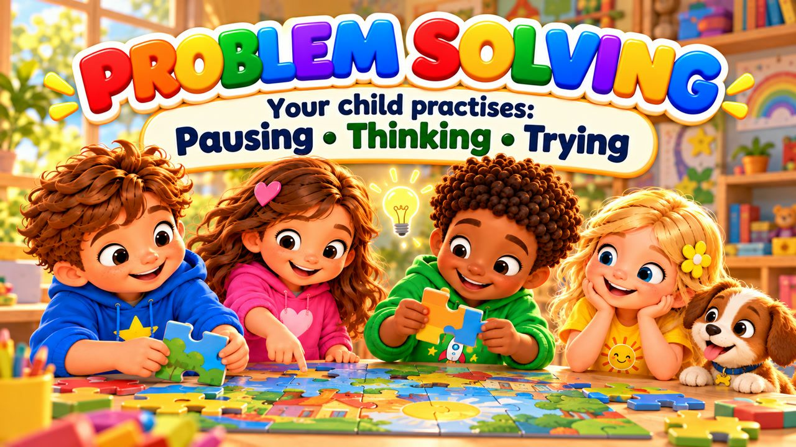
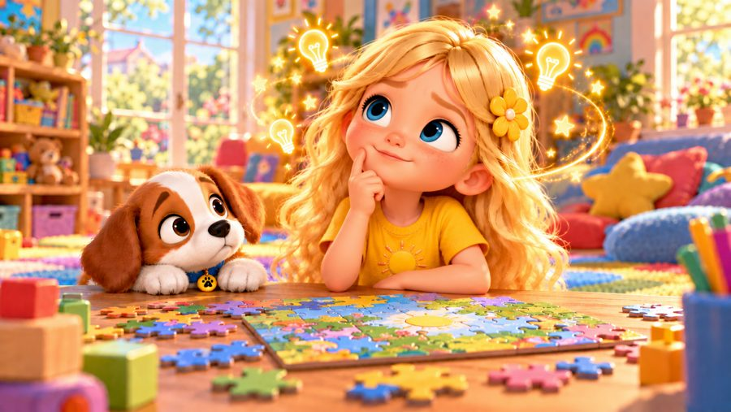
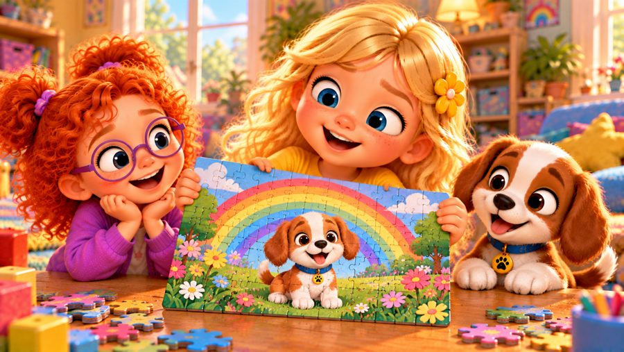
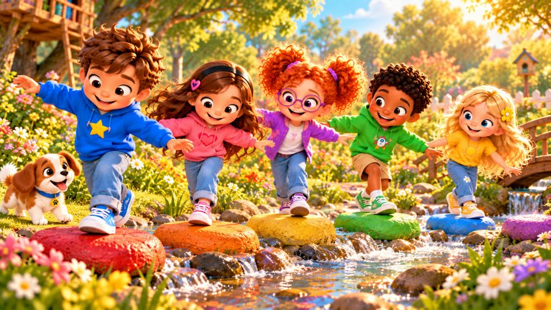
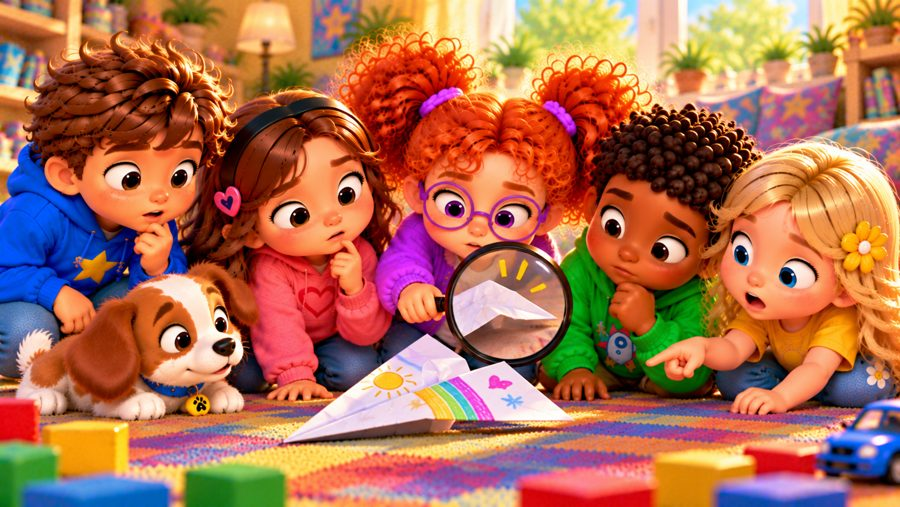
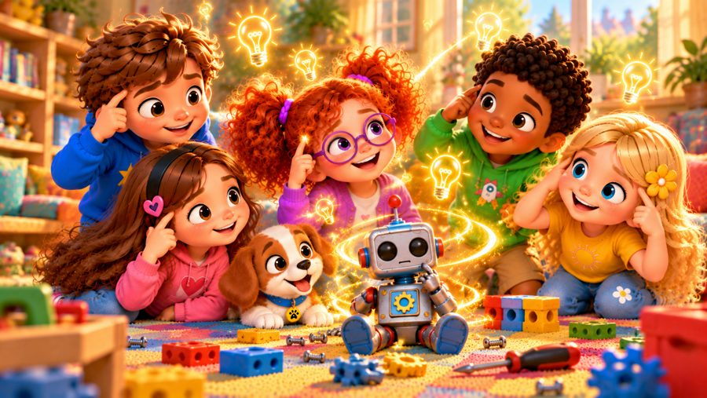
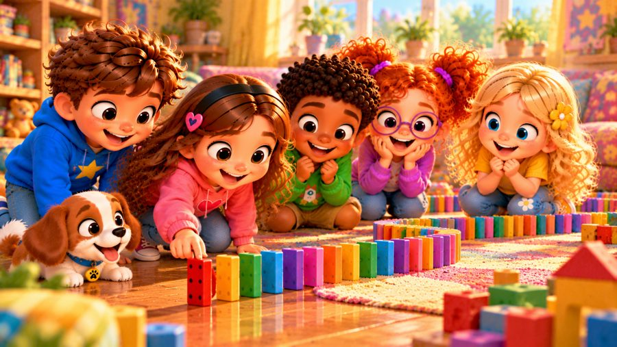

I Can Solve It!
A problem solving song for kids! 🧩 Sing along with Max, Mia, Jay, Lily, Rosie and Buddy the puppy as they learn four simple steps for any tricky moment: STOP, LOOK, THINK and TRY!
"I Can Solve It!" is a sing-along problem-solving song for kids. When a puzzle piece won't fit, a kite string gets tangled, a block bridge falls down or a paper plane won't fly, the kids stay calm, look closely, think of ideas and try another way. With big karaoke lyrics on screen, it's perfect for preschool, kindergarten and early elementary kids (ages 3–8), at home or in the classroom.

▶💡 Why this skill matters: problem solving
Problem solving helps children stay calm, think of ideas and try them out instead of giving up or getting upset. It builds independence at home, at school and later in life. When something goes wrong, resist fixing it straight away — ask “What could we try?” and let your child come up with ideas.
👨👩👧 What your child learns
- A simple problem-solving plan: stop, look, think, try
- Staying calm instead of pushing harder
- There's more than one way to solve a problem
- If it doesn't work — find out why and try something new
- Asking, listening and choosing together
💬 Talk about it after the song
- What was a tricky problem you solved this week?
- What do you do first when something doesn't work?
- Can you think of two different ways to fix it?
🏅 Quiz & Certificate
Watched the song together? Now read each question aloud — your child points to the right picture. Answer all 6 questions and your child earns a printable certificate!
🔒 The name is only used to draw the certificate on your device. We don't save or send anything.
You did it! 🎉
All 6 answers are right! Type your child's name to make the certificate.
🖨️ Free printables
Free for home and classroom use. Print on A4 or Letter paper.
🖼️ Scenes from the song






🎵 More songs


🎤 Lyrics – I Can Solve It!
Hmm... I've got a problem.
What can I do?
Stop...
Look...
Think...
I've got an idea!
My puzzle piece just doesn't fit,
I push and push — but wait a bit!
Maybe I should turn it round,
Look at the shapes and look around.
I stop and think, I take my time,
I try another piece this time.
Click! It fits! I found a way!
I solved a little problem today!
When something's tricky,
I don't have to know.
I can stop and look,
And take it slow.
Think of an idea,
Give it a try.
If it doesn't work...
I'll find out why!
I can solve it!
Yes, I can!
Stop and look,
And make a plan!
Think, think, think!
What can I do?
Try one way,
Then try something new!
I can solve it!
Step by step!
Think it through
And do my best!
Stop! Look! Think!
Try and see!
I'm a problem solver —
That's me!
We built a bridge with blocks today,
But every time, it fell away.
"Let's make the bottom wide and strong!"
We tried again — and we weren't wrong!
Then Mia's plane fell to the ground,
We looked at how its wings bent down.
We changed the folds and tried once more...
Whoosh! It flew across the floor!
When something's tricky,
We don't have to know.
We can stop and look,
And take it slow.
Think of some ideas,
Give one a try.
If it doesn't work...
We'll find out why!
I can solve it!
Yes, I can!
Stop and look,
And make a plan!
Think, think, think!
What can I do?
Try one way,
Then try something new!
I can solve it!
Step by step!
Think it through
And do my best!
Stop! Look! Think!
Try and see!
I'm a problem solver —
That's me!
I've got a problem!
STOP!
What comes next?
LOOK!
Then what?
THINK!
Got an idea?
TRY IT!
Did it work?
Let's check!
Not quite?
That's okay!
What can we do?
TRY ANOTHER WAY!
One problem...
Can have more than one way!
I can ask,
I can listen,
I can think,
I can choose.
Every problem is a chance
To learn something new!
I can solve it!
Yes, I can!
Stop and look,
And make a plan!
Think, think, think!
What can I do?
Try one way,
Then try something new!
I can solve it!
Step by step!
Think it through
And do my best!
Stop! Look! Think!
Try and see!
I'm a problem solver —
That's me!
Stop!
Look!
Think!
Try!
Check!
I've got an idea...
Let's see what happens!
Big problem,
Little problem,
I know what to do.
Stop, look, think,
Try something new!
I'm a problem solver...
And you can be one too!